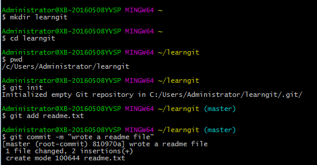

命令语句：
一、创建版本库：
第一步：找到位置创建空目录：
$cd 目录
$ mkdir learngit
$ cd learngit //进入当前目录
$ pwd //显示当前目录
第二步：通过git init命令把这个目录变成Git可以管理的仓库（初始化仓库）：
$ git init
添加文件只需两步（commit可以一次提交很多文件，所以你可以多次add不同的文件）
第一步：用命令git add告诉Git，把文件添加到仓库（先在learngit根目录下创建一个readme.txt文件）：
$ git add readme.txt
第二步：用命令git commit告诉Git，把文件提交到仓库：
$ git commit -m "wrote a readme file" //-m后面输入的是本次提交的说明，可以输入任意内容，当然最好是有意义的，这样你就能从历史记录里方便地找到改动记录。

二、时间穿梭-版本回退：
git status --掌握工作区的状态（文件是否被修改过）
git diff --参看修改内容
git log --显示从最近到最远的提交日志，查看提交历史，一遍确定要回退到哪个版本 //加上--pretty=oneline 使输出信息内容变简介
git reflog --查看命令历史，以便确定要回到未来的哪个版本
git reset --hard HEAD^ --把readme.txt回退到上一个版本 //HEAD表示当前版本,上一个版本就是HEAD^，上上一个版本就是HEAD^^，当然往上100个版本写100个^比较容易数不过来，所以写成HEAD~100

时光穿梭--工作区和暂存区：
把文件往Git版本库里添加的时候，是分两步执行的：
第一步是用git add把文件添加进去，实际上就是把文件修改添加到暂存区；
第二步是用git commit提交更改，实际上就是把暂存区的所有内容提交到当前分支。
因为我们创建Git版本库时，Git自动为我们创建了唯一一个master分支，所以，现在，git commit就是往master分支上提交更改。

一旦提交后，如果你又没有对工作区做任何修改，那么工作区就是“干净”的：

时光穿梭--管理修改：
Git跟踪并管理的是修改，而非文件.每次修改，如果不add到暂存区，那就不会加入到commit中。
时光穿梭-- 撤销修改：
git checkout -- file可以丢弃工作区的修改：
命令git checkout -- readme.txt意思就是，把readme.txt文件在工作区的修改全部撤销，这里有两种情况：
一种是readme.txt自修改后还没有被放到暂存区，现在，撤销修改就回到和版本库一模一样的状态；
一种是readme.txt已经添加到暂存区后，又作了修改，现在，撤销修改就回到添加到暂存区后的状态。
总之，就是让这个文件回到最近一次git commit或git add时的状态。
命令git reset HEAD file可以把暂存区的修改撤销掉（unstage），重新放回工作区：
git reset命令既可以回退版本，也可以把暂存区的修改回退到工作区。当我们用HEAD时，表示最新的版本。
时光穿梭--删除文件:
一般情况下，通常直接在文件管理器中把没用的文件删了，或者用rm命令删了：
三、远程仓库--添加远程库：
第一步：创建SSH Key。在用户主目录下，看看有没有.ssh目录，如果有，再看看这个目录下有没有id_rsa和id_rsa.pub这两个文件，如果有的话，直接跳过此如下命令，如果没有的话，打开命令行，输入如下命令：
ssh-keygen -t rsa –C “youremail@example.com” //一直enter直到没有内容

id_rsa是私钥，不能泄露出去，id_rsa.pub是公钥，可以放心地告诉任何人。
第二步：登录github,打开” settings”中的SSH Keys页面，然后点击“Add SSH Key”,填上任意title，在Key文本框里黏贴id_rsa.pub文件的内容。【这时会收到一份邮件确认拱腰是否错误，注意不要点击】

添加远程库：
现在的情景是：我们已经在本地创建了一个Git仓库后，又想在github创建一个Git仓库，并且希望这两个仓库进行远程同步，这样github的仓库可以作为备份，又可以其他人通过该仓库来协作。
首先，第一步
登录github上，然后在右上角找到“create a new repo”创建一个新的仓库。如下：

在Repository name填入testgit，其他保持默认设置，点击“Create repository”按钮，就成功地创建了一个新的Git仓库：

目前，在GitHub上的这个testgit仓库还是空的，GitHub告诉我们，可以从这个仓库克隆出新的仓库，也可以把一个已有的本地仓库与之关联，然后，把本地仓库的内容推送到GitHub仓库。
现在，我们根据GitHub的提示，在本地的testgit仓库下运行命令：
git remote add origin https://github.com/KeenChen/testgit.git
所有的如下：

输入用户名和密码，如下：

从现在起，只要本地作了提交，就可以通过如下命令：
git push origin master
把本地master分支的最新修改推送到github上了，现在你就拥有了真正的分布式版本库了。
远程仓库--从远程库克隆：
上面我们了解了先有本地库，后有远程库时候，如何关联远程库。
现在我们想，假如远程库有新的内容了，我想克隆到本地来 如何克隆呢？
首先，登录github，创建一个新的仓库，名字叫testgit2.如下：

如下。我们看到：

现在，远程库已经准备好了，下一步是使用命令git clone克隆一个本地库了。如下所示：

接着在我本地目录下 生成testgit2目录了，如下所示：

四、分支管理-创建合并分支：
在版本回填退里，你已经知道，每次提交，Git都把它们串成一条时间线，这条时间线就是一个分支。截止到目前，只有一条时间线，在Git里，这个分支叫主分支，即master分支。HEAD严格来说不是指向提交，而是指向master，master才是指向提交的，所以，HEAD指向的就是当前分支。
首先，我们来创建dev分支，然后切换到dev分支上。如下操作：

git checkout命令加上-b参数表示创建并切换，相当于以下两条命令：
$ git branch dev
$ git checkout dev
$ git checkout dev
Switched to branch 'dev
然后，用git branch命令查看当前分支：
git branch命令会列出所有分支，当前分支前面会标一个*号。
然后，我们就可以在dev分支上正常提交，比如对readme.txt做个修改，加上一行
4444444：

现在dev分支工作已完成，现在我们切换到主分支master上，继续查看readme.txt内容如下：

现在我们可以把dev分支上的内容合并到分支master上了，可以在master分支上，使用如下命令 git merge dev 如下所示：

git merge命令用于合并指定分支到当前分支上，合并后，再查看readme.txt内容，可以看到，和dev分支最新提交的是完全一样的。
注意到上面的Fast-forward信息，Git告诉我们，这次合并是“快进模式”，也就是直接把master指向dev的当前提交，所以合并速度非常快。
合并完成后，我们可以接着删除dev分支了，操作如下：

总结创建与合并分支命令如下：
查看分支：git branch
创建分支：git branch name
切换分支：git checkout name
创建+切换分支：git checkout –b name
合并某分支到当前分支：git merge name
删除分支：git branch –d name
四、分支管理--解决冲突：
先新建一个新分支，比如名字叫fenzhi，在readme.txt添加一行内容，然后提交，如下所示：

现在切换到master分支上来，改变最后一行内容，如下所示：

现在，master分支和fenzhi(feature1)分支各自都分别有新的提交，变成了这样：

这种情况下，Git无法执行“快速合并”，只能试图把各自的修改合并起来，但这种合并就可能会有冲突，我们试试看：

Git用<<<<<<<，=======，>>>>>>>标记出不同分支的内容，其中<<<HEAD是指主分支修改的内容，>>>>>fenzhi1 是指fenzhi1上修改的内容，我们可以修改下如下后保存：

现在，master分支和feature1分支变成了下图所示：

用带参数的git log也可以看到分支的合并情况：

最后，删除feature1分支：
小结
当Git无法自动合并分支时，就必须首先解决冲突。解决冲突后，再提交，合并完成。
用git log --graph命令可以看到分支合并图。
四、分支管理--分支管理策略：
通常合并分支时，git一般使用”Fast forward”模式，在这种模式下，删除分支后，会丢掉分支信息，现在我们来使用带参数 –no-ff来禁用”Fast forward”模式。首先我们来做demo演示下：
- 创建一个dev分支。
- 修改readme.txt内容。
- 添加到暂存区。
- 切换回主分支(master)。
- 合并dev分支，使用命令 git merge -–no-ff -m “注释” dev
- 查看历史记录

合并dev分支，请注意--no-ff参数，表示禁用Fast forward：
可以看到，不使用Fast forward模式，merge后就像这样：

分支策略
在实际开发中，我们应该按照几个基本原则进行分支管理：
首先，master分支应该是非常稳定的，也就是仅用来发布新版本，平时不能在上面干活；
那在哪干活呢？干活都在dev分支上，也就是说，dev分支是不稳定的，到某个时候，比如1.0版本发布时，再把dev分支合并到master上，在master分支发布1.0版本；
每个人都在dev分支上干活，每个人都有自己的分支，时不时地往dev分支上合并就可以了。
团队合作的分支看起来就像这样：

四、分支管理--Bug分支：
在开发中，会经常碰到bug问题，那么有了bug就需要修复，在Git中，分支是很强大的，每个bug都可以通过一个临时分支来修复，修复完成后，合并分支，然后将临时的分支删除掉。
比如我在开发中接到一个404 bug时候，我们可以创建一个404分支来修复它，但是，当前的dev分支上的工作还没有提交。比如如下：
git stash 将当前的工作现场隐藏起来
git stash list 查看隐藏的工作现场列表
工作现场还在，Git把stash内容存在某个地方了，但是需要恢复一下，可以使用如下2个方法：
- git stash apply恢复，恢复后，stash内容并不删除，你需要使用命令git stash drop来删除。
- 另一种方式是使用git stash pop,恢复的同时把stash内容也删除了。
四、分支管理--Feature分支：
开发一个新feature，最好新建一个分支；
如果要丢弃一个没有被合并过的分支，可以通过git branch -D <name>强行删除
四、分支管理--多人协作：
当你从远程库克隆时候，实际上Git自动把本地的master分支和远程的master分支对应起来了，并且远程库的默认名称是origin。
- 要查看远程库的信息 使用 git remote
- 要查看远程库的详细信息 使用 git remote –v

推送分支：
推送分支，就是把该分支上的所有本地提交推送到远程库。推送时，要指定本地分支，这样，Git就会把该分支推送到远程库对应的远程分支上：
使用命令 git push origin master
我现在的github上的readme.txt代码如下：

本地的readme.txt代码如下：

现在我想把本地更新的readme.txt代码推送到远程库中，使用命令如下：

可以看到如上，推送成功，我们可以继续来截图github上的readme.txt内容 如下：

如果要推送其他分支，比如dev，就改成
$ git push origin dev
但是，并不是一定要把本地分支往远程推送，那么，哪些分支需要推送，哪些不需要呢？
- master分支是主分支，因此要时刻与远程同步；
- dev分支是开发分支，团队所有成员都需要在上面工作，所以也需要与远程同步；
- bug分支只用于在本地修复bug，就没必要推到远程了，除非老板要看看你每周到底修复了几个bug；
- feature分支是否推到远程，取决于你是否和你的小伙伴合作在上面开发。
抓取分支：
多人协作时，大家都会往master和dev分支上推送各自的修改。现在我们可以模拟另外一个同事，可以在另一台电脑上（注意要把SSH key添加到github上）或者同一台电脑上另外一个目录克隆，新建一个目录名字叫testgit2。
首先要把dev分支也要推送到远程去，如下：

接着进入testgit2目录，进行克隆远程的库到本地来，如下：

当你的小伙伴从远程库clone时，默认情况下，你的小伙伴只能看到本地的master分支。不信可以用git branch命令看看：
你的小伙伴要在dev分支上开发，就必须创建远程origin的dev分支到本地，于是他用这个命令创建本地dev分支：git checkout –b dev origin/dev
现在小伙伴们就可以在dev分支上做开发了，开发完成后把dev分支推送到远程库时。

小伙伴们已经向origin/dev分支上推送了提交，而我在我的目录文件下也对同样的文件同个地方作了修改，也试图推送到远程库时，如下：

由上面可知：推送失败，因为我的小伙伴最新提交的和我试图推送的有冲突，解决的办法也很简单，上面已经提示我们，先用git pull把最新的提交从origin/dev抓下来，然后在本地合并，解决冲突，再推送。

git pull也失败了，原因是没有指定本地dev分支与远程origin/dev分支的链接，根据提示，设置dev和origin/dev的链接：如下：

这回git pull成功，但是合并有冲突，需要手动解决，解决的方法和分支管理中的 解决冲突完全一样。解决后，提交，再push：

现在手动已经解决完了，我接在需要再提交，再push到远程库里面去。如下所示：

因此：多人协作工作模式一般是这样的：
- 首先，可以试图用git push origin branch-name推送自己的修改.
- 如果推送失败，则因为远程分支比你的本地更新早，需要先用git pull试图合并。
- 如果合并有冲突，则需要解决冲突，并在本地提交。再用git push origin branch-name推送。
如果git pull提示“no tracking information”，则说明本地分支和远程分支的链接关系没有创建，用命令git branch --set-upstream branch-name origin/branch-name
这就是多人协作的工作模式，一旦熟悉了，就非常简单。
五、标签管理：
在Git中打标签非常简单，首先，切换到需要打标签的分支上：
$ git branch
* dev
master
$ git checkout master
Switched to branch 'master'
后，敲命令git tag <name>就可以打一个新标签：
$ git tag v1.0
可以用命令git tag查看所有标签：
$ git tag
v1.0
默认标签是打在最新提交的commit上的。有时候，如果忘了打标签，比如，现在已经是周五了，但应该在周一打的标签没有打，怎么办？
方法是找到历史提交的commit id，然后打上就可以了：
$ git log --pretty=oneline --abbrev-commit
6a5819e merged bug fix 101
cc17032 fix bug 1017825a50 merge with no-ff
6224937 add merge
59bc1cb conflict fixed
400b400 & simple
75a857c AND simple
fec145a branch test
d17efd8 remove test.txt
6a5819e merged bug fix 101
cc17032 fix bug 1017825a50 merge with no-ff
6224937 add merge
59bc1cb conflict fixed
400b400 & simple
75a857c AND simple
fec145a branch test
d17efd8 remove test.txt
...
- 命令git push origin <tagname>可以推送一个本地标签；
- 命令git push origin --tags可以推送全部未推送过的本地标签；
- 命令git tag -d <tagname>可以删除一个本地标签；
- 命令git push origin :refs/tags/<tagname>可以删除一个远程标签
Git基本常用命令如下：
mkdir： XX (创建一个空目录 XX指目录名)
pwd： 显示当前目录的路径。
git init 把当前的目录变成可以管理的git仓库，生成隐藏.git文件。
git add XX 把xx文件添加到暂存区去。
git commit –m “XX” 提交文件 –m 后面的是注释。
git status 查看仓库状态
git diff XX 查看XX文件修改了那些内容
git log 查看历史记录
git reset –hard HEAD^ 或者 git reset –hard HEAD~ 回退到上一个版本
(如果想回退到100个版本，使用git reset –hard HEAD~100 )
cat XX 查看XX文件内容
git reflog 查看历史记录的版本号id
git checkout — XX 把XX文件在工作区的修改全部撤销。
git rm XX 删除XX文件
git remote add origin https://github.com/tugenhua0707/testgit 关联一个远程库
git push –u(第一次要用-u 以后不需要) origin master 把当前master分支推送到远程库
git clone https://github.com/tugenhua0707/testgit 从远程库中克隆
git checkout –b dev 创建dev分支 并切换到dev分支上
git branch 查看当前所有的分支
git checkout master 切换回master分支
git merge dev 在当前的分支上合并dev分支
git branch –d dev 删除dev分支
git branch name 创建分支
git stash 把当前的工作隐藏起来 等以后恢复现场后继续工作
git stash list 查看所有被隐藏的文件列表
git stash apply 恢复被隐藏的文件，但是内容不删除
git stash drop 删除文件
git stash pop 恢复文件的同时 也删除文件
git remote 查看远程库的信息
git remote –v 查看远程库的详细信息
git push origin master Git会把master分支推送到远程库对应的远程分支上